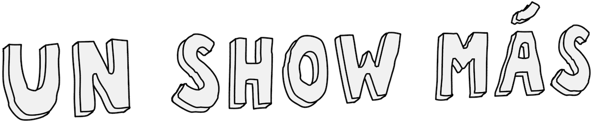
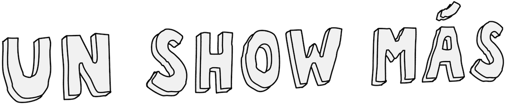

Mordecái y los Rigby's
UN SHOW MÁS
Mordecai y los Rigby's es el duodécimo episodio y último de la Primera Temporada de Un Show Más. En este episodio, Mordecai y Rigby del futuro vienen a ayudar a Mordecai y Rigby a practicar para una noche de micrófono abierto. La canción, "Party Tonight" escrita por Sean Szeles y la popular banda Mordecai y Los Rigbys es utilizada durante el episodio. Este episodio ha recibido elogios de la crítica por su trama y la canción.